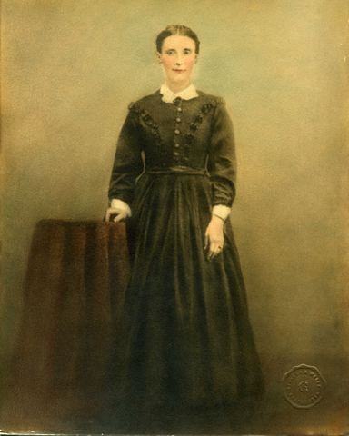

Margaret Wilkie Buchanan
1841–1878
Life events
| Baptized | Cadder, Lanarkshire, Scotland Map |
|---|---|
| Born | 14 Apr 1841 · Cadder, Lanarkshire, Scotland Map |
| Married | 13 Jul 1860 · David Morrison Linn · Barony, Lanarkshire, Scotland Map |
| Lived | 1861 · Cadder, Lanarkshire, Scotland Map · Age: 19; Relation to Head of House: Wife |
| Lived | 1870 · Lonaconing, Maryland Map |
| Lived | 1871 · Govan, Lanarkshire, Scotland Map · Relation to Head of House: Daughter |
| Died | 2 Nov 1878 · Keyser, West Virginia Map |
| Buried | Queens Point Cemetery, Keyser, West Virginia Map · Buried in the Linn family section. Gravestone reads: "Mother, Margaret wife of David M. Linn, died Jan 2 1878, 36 mo 19 days. Asleep in Jesus". |
Family


Photos
Margaret Wilkie Buchanan